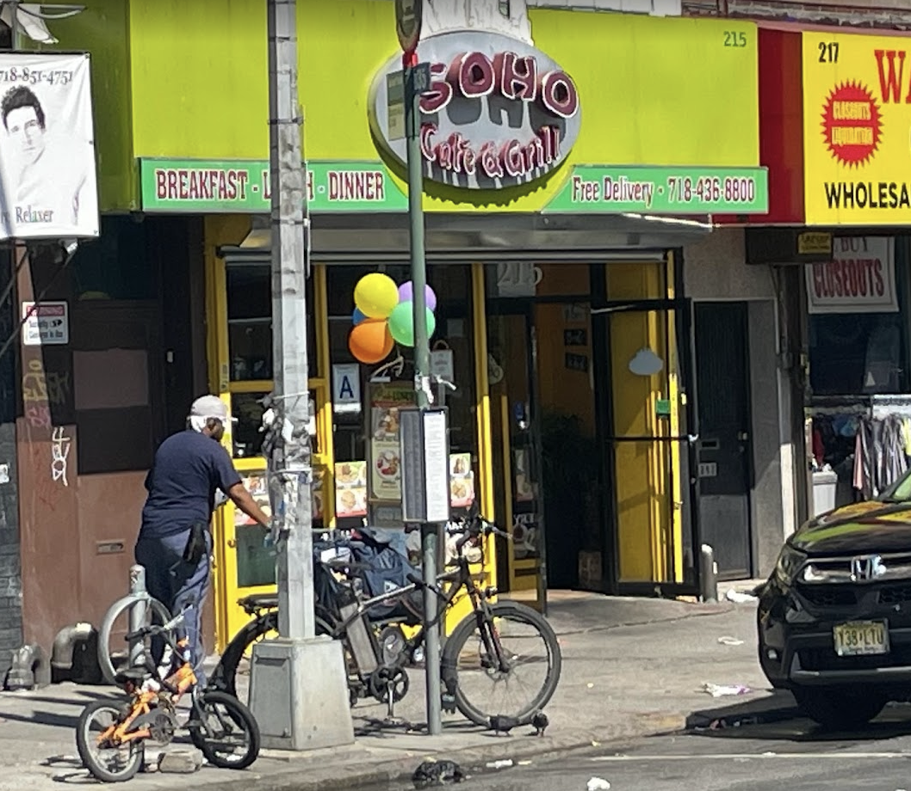
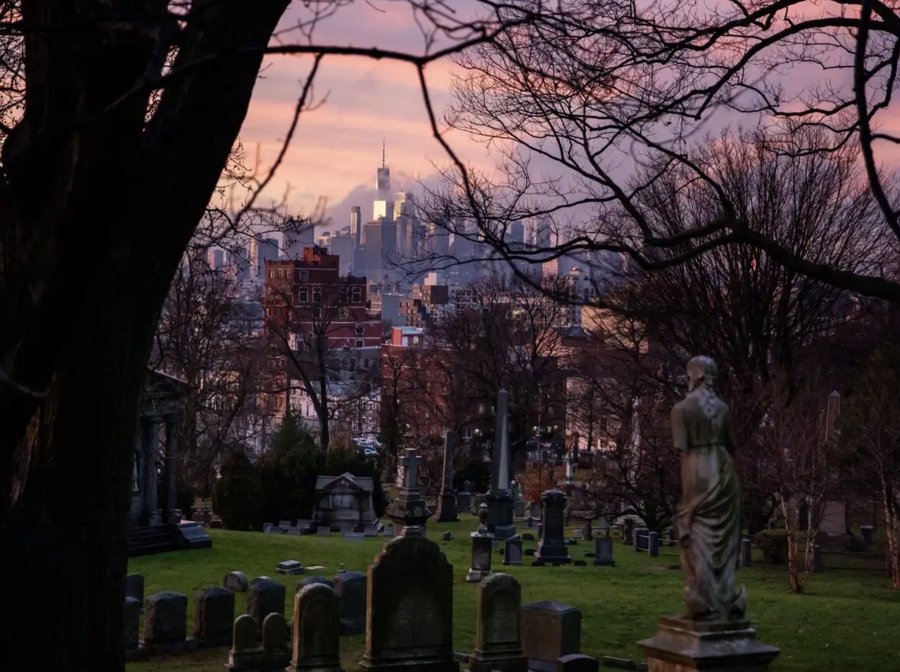

This is one of my favorite places to eat! I always get the same order from here. Which is the tofu scramble. They actually took it off of the menu, but because I'm a regular, they know what I mean when I ask for it. It makes me feel pretty special!!
The tofu scramble consists of tofu(duh), kale, quinoa, avocado, tomato, and a bit of vegan cheese. It's soo yummy, and I'll usually get a cookie for dessert.
This is one of my favorite places to just hang out. I don't like going to the park that much, it's always a bit too crowded and loud for me, so Greenwood cemetery is perfect. It has beautiful scenery and its very quiet and calm.
It's always important to make sure to respect the non living, though. Make sure to follow all the rules carefully!
Shutterstock©